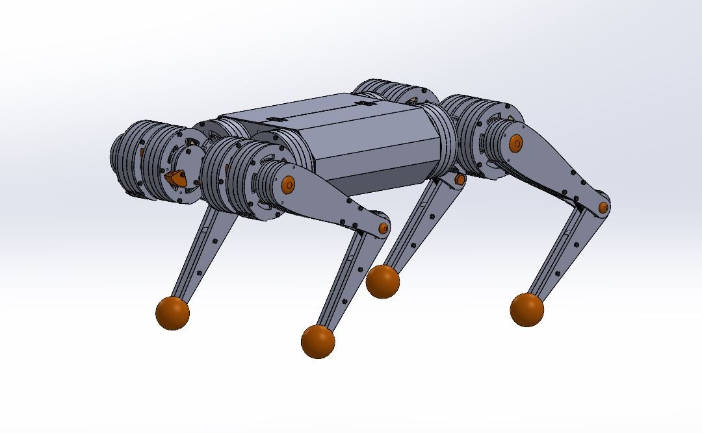
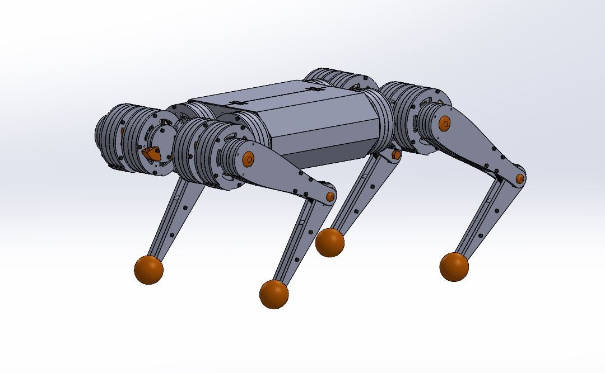

Second semester project, the goal was to create a cycle route planner on Swiss territory. The route had to consider the cycle paths and the unevenness of the terrain to find the best path. The source code is not available because the project has not yet been rated.
"Advance wars" style game made in java. There are different types of units, music, and animations. The maps have their own effects that will have to be used to pass the levels. The style of the game is inspired by Despot's Game.
Implementation of fingerprint recognition in Java based on the calculation of minutiae and their orientation

Le plus bo
The goal of this project is to use free basic assets to procedurally generate city buildings. For this, we proceed as follows: We use Pearlin noise from unity with a threshord to create the shape of the foundation. We apply a recursive filter on the shape to remove holes and irregular shapes. We build the walls and windows up to the desired height We build the roof recursively starting from the outside, if a geometry is irregular (i.e. if no pieces can complete it) we add walls and the roof is built on the next level. And finally, we add decorations such as fireplaces and balconies.
Printable 3d puzzle of overwatch game character Reinhardt. This model is based on the Reinhardt figurine from Incredibuilds. I recreated it because it is not sold in my country. I also did the BioShock Big Daddy model but never posted it.


I wanted to create a quadruped robot, at first using basic components like servo motors. However, these components do not allow good control and effects such as elasticity, force control or damping. I was inspired by MIT and I created several 3D models, the first version had big problems but allowed me to do physical simulation. The second version is smaller and used commercially available components but lacked power. The 3rd version required custom components and machined parts. I rebuilt the MIT robot's motor controller and test it. Currently, I have not yet managed to have the machined parts so the project is on hold.
 

Scorpion robot controllable through a phone application. It uses an arduino card, Bluetooth, 20 servomotors. The tail could be moved.